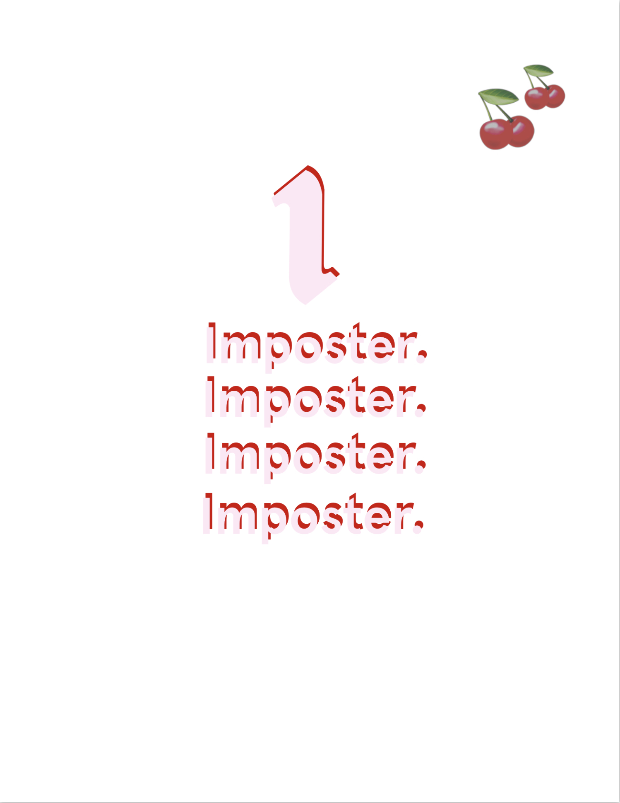

Imposter helps you design your place with affordable and stylish posters!
Presentation of the Startup
Imposter is a startup selling minimalistic and aesthetic posters made from ethical and sustainable reusable paper
About the founder
 Hi! I am Elinor Kleiner, founder and CEO of imposter. I am a first year student in Business and Administration at ESSEC Business School
Check my profile page!
Hi! I am Elinor Kleiner, founder and CEO of imposter. I am a first year student in Business and Administration at ESSEC Business School
Check my profile page!
About our designs
Our posters are original designs inspired by the cosmetic brand glossier. They are created on the GoodNotes App on Ipad.
-

-

- 
What is Imposter?
Imposter is a brand that was initially created for a programing project, and then progressively develeped into an actual startup. We are proud of our original designs that were made by hand by the founder of the brand. Everyday, we try to respond to as many needs possible by carefully listening to what you have to say
Join us!
By completing this form, you will help us improve our services by responding to your specific needs.
Complete form